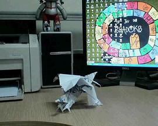
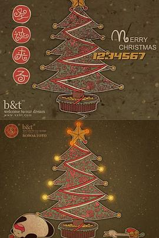
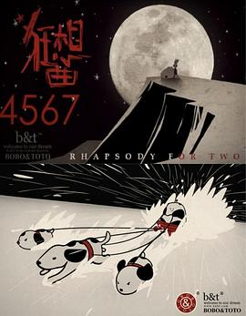
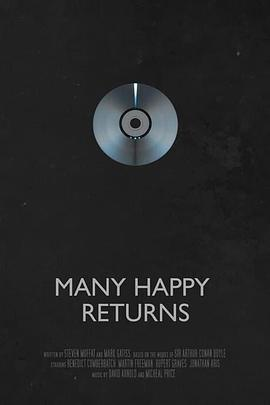
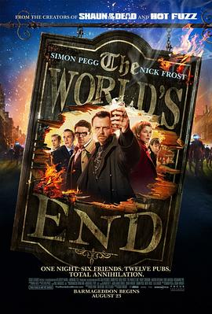
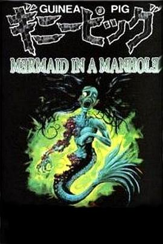
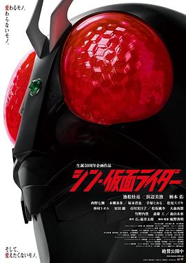

2025年5月
广播发布后不可编辑，所以每条都是那一刻的原话。
2025-05-31 18:35:18
看过 星际宝贝史迪奇 / Lilo & Stitch ★★★☆☆
遛狗要牵绳，现实里似乎真没有蓝色的狗。vans可不能碰水啊，会开胶。双线叙事很好，一条明线是姐姐与妹妹，一条暗线是妹妹拯救史迪奇，只是剧情实在太过合家欢不太能推敲，就算是“欧哈纳”也无法改变。史迪奇真可爱啊。和弟弟妹妹看的又一部电影。
2025-05-29 08:15:51
转发了 我们都爱养鸟小组 的讨论
小鸡算不算呢。


2025-05-29 00:04:15
看过 神探夏洛克(试播集) / Sherlock S01E00 Pilot ★★★★☆
好肥皂剧的样子。剧情比正剧合理了一些。
2025-05-29 00:02:35
在听 和你一起的旅行 ★★★★☆
一大年过去了声音还是小孩子的嗓子，真是蛮厉害的。
2025-05-27 23:58:12
看过 法式火锅 / La Passion de Dodin Bouffant ★★★★☆
真不愧为最佳导演，场面调度很是厉害，做菜的碟碟罐罐多得难以管理，但陈英雄还是很让我流畅地认出做了哪些菜。伯努瓦在这里的造型令我想起了威廉姆斯，比诺什真漂亮。一开始吃饭时的平行蒙太奇点出了比诺什才是真正的主角，同时她洗澡时又可以与伯努瓦开头的泡澡作对比，床戏可真是一如既往地潮湿与越南。所以一旦比诺什是生了病后是否是处于颓势才答应了结婚的要约。天线和白布盖着吃东西可真是好笑，这部电影又可以叫作厨师与其贪吃馋嘴的朋友，也因此导致我在看电影的时候不断地吃着零食。后半段用来寻味，最后的环绕镜头有一次展现了陈英雄奇迹般地调度，连灯光都自得其然，就是我不喜欢间歇性的推移后同时变焦的镜头，那使我想起了《南方车站的约会》，看得我很难受。
2025-05-26 13:02:28
 读过 光之豚 ★★★☆☆
读过 光之豚 ★★★☆☆
bobo与toto在《燕尾蝶》故事的后续，但看得我很费劲。（2025, 5, 26，“即使人们珍惜了，也终有一天要与那些心爱的告别。”后记让我看得也害怕起我的咪咪离开。成年之后会变成动物，好新颖的观点。）
2025-05-26 00:15:32
读过 光之豚 ★★★☆☆
bobo与toto在《燕尾蝶》故事的后续，但看得我很费劲。（2025, 5, 26，“即使人们珍惜了，也终有一天要与那些心爱的告别。”后记让我看得也害怕起我的咪咪离开。）
2025-05-25 00:57:10
在读 光之豚 ★★★☆☆
bobo与toto在《燕尾蝶》故事的后续，但看得我很费劲。
2025-05-24 18:26:40

真定格动画。飞机的转场很棒。总体是来黑卡巴斯基的么。时代的眼泪了。
2025-05-24 15:18:51
看过 功夫兔系列3：菜包狗大反击 ★★★★☆
制作较前两部更精良了。不过为什么哪都有致谢mint老师的呢。
2025-05-24 15:09:38
看过 功夫兔系列之2：兔子哪里跑 / Kungfu Bunny 2 ★★★★☆
永远对实景作画动心，没办法。
2025-05-24 15:04:27
看过 功夫兔系列1：少林兔与武当狗 ★★★☆☆
当时看肯定创意十足，但现在只是索然无味。
2025-05-23 22:03:11
看过 燕尾蝶 ★★★★★
bobo的一步三回头让我哽咽住，熊猫与小鸡真的只能是悲剧么。被扔进垃圾桶里真的好可怕，所以说不能乱吃东西啊。cast里居然是iso和mint夫妻档配音哈。
2025-05-23 18:23:58
看过 芭比Girl ★★★★☆
一个离经叛道的有关爱的故事。
2025-05-23 18:06:31

最后圣诞老人火烧屁股有点离谱。
2025-05-23 18:06:01
看过 圣诞礼物 ★★★★☆
2025-05-23 17:55:11

中间那段的追逐蒙太奇很棒。
2025-05-23 17:37:53
在听 这个下午很无聊 ★★★★☆
买不到的长寿烟。
2025-05-23 17:37:38
听过 晚安喵 ★★★★☆
我在生日那天晚上唱过。
2025-05-23 17:34:58
听过 这个下午很无聊 ★★★★☆
买不到的长寿烟。
2025-05-23 17:24:54
看过 波波和托托 / BOBO&TOTO ★★★★☆
终于有条目啦！（没想到熊猫的性征这么明显。iso的声音真好听。）（越往后分镜越有设计了。蛮好。）
2025-05-23 17:04:20
在看 波波和托托 / BOBO&TOTO ★★★★☆
终于有条目啦！（没想到熊猫的性征这么明显。iso的声音真好听。）
2025-05-23 15:20:37
写了《BOBO&TOTO》的讨论
(o^^o)
2025-05-23 15:00:15
终于有条目啦！
2025-05-23 14:59:05
上传了1张照片到 波波和托托 BOBO&TOTO (2005) 的 图片
2025-05-23 13:54:05
 想看 天使爱过界 / À la folie… pas du tout
想看 天使爱过界 / À la folie… pas du tout
粉色的表白。
2025-05-22 22:20:10
看过 蜂鸟 / 벌새 ★★★★☆
蜂鸟究竟是何物，开头反常的敲门与中段对着背影喊母亲的过程皆仿若做梦一般，真实的历史事件串联起了人物，并实际地推动情节的急剧变化，使少女看世界的目光都开始游离却炯炯了起来。老师好帅哦，最后她与少女见不到的一面才最让人痛心，。同时老师的一句话我恐怕会记很久的，“不要随便地同情他人。”镜头纪实地记录那个时候教育的呆板与个体户的浅显，使父母的无视与关心反而合理了起来。另外父母的婚姻虽然几个镜头寥寥带过，可是很值得深思。桥塌了，少女该成长了。
2025-05-22 17:41:47
听过 爱的声响-Bobo & Toto系列动画音乐精选集 ★★★★★
喜欢《反战》的那一首。好奇mint与iso的爱情故事。我真心羡慕。
2025-05-22 12:59:42
听过 爱的声响-BoBo&ToTo系列动画音乐原声集 ★★★★★
粗糙但是真切。iso的歌声好像小孩子。
2025-05-22 09:16:44
看过 罗小黑战记番外篇：晚安喵 ★★★★☆
真好。
2025-05-21 18:41:16
看过 奔跑吧 第九季 ★★★☆☆
和baby一起悠闲看的。
2025-05-21 15:13:32
在看 奔跑吧 第九季 ★★★☆☆
和baby一起悠闲看的。
2025-05-21 11:29:19
 读过 負けヒロインが多すぎる! 8 ★★★★☆
读过 負けヒロインが多すぎる! 8 ★★★★☆
老马这卷要发力了么。除了第一卷外最喜欢的一卷了，老马在这里简直是一个很真实的女孩，最后的告白让我也心头一颤。真舍不得老马啊。温水的两个行为有点下头，不，大部分男同志好像都差不多。
2025-05-20 22:38:17
 看过 喂，看见耳朵啦 / ほら、耳がみえてるよ！ ★★★☆☆
看过 喂，看见耳朵啦 / ほら、耳がみえてるよ！ ★★★☆☆
篇幅比较短小的治愈作，忘记了当时为什么要标记想看了，今晚顺手看完。这就是软耽美么。很快看完了，除了第一集是国语的，剩下的都是日语版的，雄马的声音蛮好听的。去日本依旧是烟火大会那几样，吵吵闹闹的很逗比但是没意思。
2025-05-20 22:13:42
在看 喂，看见耳朵啦 / ほら、耳がみえてるよ！ ★★★☆☆
篇幅比较短小的治愈作，忘记了当时为什么要标记想看了，今晚顺手看完。这就是软耽美么。
2025-05-20 19:35:18
 读过 路易·波拿巴的雾月十八日 ★★★★☆
读过 路易·波拿巴的雾月十八日 ★★★★☆
老马的眼光果然毒辣。（2025, 5, 20，沉默的大多数才是左右历史的关键力量，这是唯物史观的具体体现。不过在老马笔下看这场政治闹剧俨然一场过家家似的。这里也体现了资产阶级有着无法克服的软弱性。没有正确指导思想的无产阶级只能被当作枪使么。）
2025-05-20 18:03:09
读过 路易·波拿巴的雾月十八日 ★★★★☆
老马的眼光果然毒辣。（2025, 5, 20，沉默的大多数才是左右历史的关键力量，这是唯物史观的具体体现。不过在老马笔下看这场政治闹剧俨然一场过家家似的。资产阶级有着无法克服的软弱性。）
2025-05-20 17:59:36
 在读 爱你就像爱生命 ★★★★☆
在读 爱你就像爱生命 ★★★★☆
校图书馆借的，也不知道什么版本。奇怪为什么后面会加上小说《绿毛水怪》。
2025-05-20 17:58:41
在读 負けヒロインが多すぎる! 8 ★★★★☆
老马这卷要发力了么。
2025-05-20 15:30:38
 看过 总之就是非常可爱 ～制服～ / トニカクカワイイ ～制服～ ★★★☆☆
看过 总之就是非常可爱 ～制服～ / トニカクカワイイ ～制服～ ★★★☆☆
太离谱了他们居然还只是高中生的年龄么。第一季影响最深的还是惊为人天的开头与充满电音的op。nasa恐怕是觉醒了制服xp了吧，问题是你们也太纯爱了，纯到成了柏拉图式一般的去掉了性的存在。
2025-05-19 22:09:24
看过 神探夏洛克：可恶的新娘 / Sherlock: The Abominable Bride ★★★☆☆
最后居然没有说明那具掉包的尸体究竟哪去了，很可惜，不过也算是开启了第四季。这里胖胖的Mycroft和飒飒的Molly真是意想不到的惊喜。那个时代里妇女参政论者的兴起使其很值得去讨论女性的解放运动，但程序正义与实体正义的优胜劣汰我还是讲不明白。现代词汇的引入，例如“virus in the data.”使其宛如一场舞台剧。这里也讨论了剧集里夏洛克的塑造问题，究竟是探案为先还是讲好夏洛克本人的故事，显然编剧也更倾向于后者。梦中梦的结构很有意思，最后也复刻了经典的莱辛巴赫瀑布场景，但就是没劲，因为《神探夏洛克》的特色就在于讲历史的夏洛克在现代语境下的故事啊。
2025-05-19 16:33:16
在听 这个下午很无聊 ★★★★☆
买不到的长寿烟。
2025-05-19 14:40:06
 读过 银河铁道之夜 ★★★★☆
读过 银河铁道之夜 ★★★★☆
《烟花》里开头的童话，想见识见识天之芒草究竟是何物。
2025-05-19 14:39:18
 读过 张枣的诗 ★★★★★
读过 张枣的诗 ★★★★★
从《四个四季·夏歌》所熟识，也可惜《四个四季》没有冬歌。
2025-05-19 14:37:45
 读过 夜的命名术 ★★★★☆
读过 夜的命名术 ★★★★☆
喜欢《从另一边》《蓝》和《黄昏》。反复理解扉页的引语，死亡并不可怕。
2025-05-19 14:36:57
 读过 繁花 ★★★★★
读过 繁花 ★★★★★
真厉害呀这个文字，短促又准确。我最喜欢沪太路。
2025-05-19 14:30:17
看过 神探夏洛克：最后的誓言 / Sherlock: His Last Vow ★★★☆☆
实话说并不觉得这集出彩。真正让我赞叹不已的是s02 e01。
2025-05-19 14:25:37

《福至如归》的翻译很好。
2025-05-18 22:53:58
看过 夏日大作战 / サマーウォーズ ★★★★☆
看得很开心很热血，里面受限于时代所展现的传统大家庭没什么值得好批判。中间的棒球与战斗的平行叙事很有趣，只是最后的花牌决斗有些草率，况且我不懂规则光顾着呐喊“世界人民大团结万岁”了。
2025-05-18 20:26:22
看过 辉夜大小姐想让我告白：初吻不会结束 / かぐや様は告らせたい-ファーストキッスは終わらない- ★★★★☆
依然沙雕的剧情，但是讨论起了更深刻的话题，即本我的真实性。不明白为什么好好一部电影要拆开成四集episode，也不明白其中一些的画面切割是究竟何意。但是他们的恋爱终归甜腻腻的，真好啊。
2025-05-18 12:07:08
看过 青梅竹马 / 青梅竹馬 ★★★★☆
杨导的又一把手术刀，依旧是十分克制的镜头记录叙事。青涩的侯导有些痞帅痞帅的，似乎在时时刻刻清醒地管着别人的事情，但第一次糊涂丢了车，第二次糊涂丢了命。每个人好像都在走着下坡路。
2025-05-18 08:52:58
想看 风林火山 / 風林火山
2025-05-17 01:06:39
听过 温软宇宙 ★★★★☆
间奏的旋律很悦耳。
2025-05-17 01:05:46
看过 沃玛的生活 ★★★★★
好看无须多言。
2025-05-17 00:40:56
看过 攻壳机动队 / 攻殻機動隊 ★★★★★
“网络无限宽广。”这句话真是深刻点明了网络的本质，三十年前就清晰认识了简直不可思议。不过有些好奇为什么科技生产力都那么发达了为什么国家与民族还存在呢。因为删减问题没去影院看有点可惜。
2025-05-16 13:06:59
看过 琳达！琳达！琳达！ / リンダ リンダ リンダ ★★★★☆
青春真是太青春了，光是下着雨的游泳池就满满洋溢着热情。小望冷冷的，瞌睡不醒好可爱捏。少女们赤脚站在台上放声歌唱，简直美好啊。
2025-05-15 23:27:21

太有趣了这部，没想到冰激凌最后才出现，Andy胖胖的真可爱，King疯疯癫癫的状态在最后与机器人抑或他的好兄弟们的一起冒险下得到了真正的诠释。
2025-05-15 12:49:05
想看 阳光普照 / 陽光普照
2025-05-14 10:15:46
 读过 通往全新的你 1 ★★★★☆
读过 通往全新的你 1 ★★★★☆
画风笔触都不错，就是不明白为什么第八十一次的小亚希要勾引老师到上床。通宵看完六卷，开头的灾难使我想起了并不久远的过去。最后的感化有些草率，还是校园霸凌的那一套旧叙事。
2025-05-12 20:25:35

分镜调度都有，道具十分逼真，就是剧情莫名其妙。
2025-05-12 20:24:14
收藏评论到豆列 理解 流氓无产阶级的统治及超越阶级的可能性
2025-05-12 18:20:46
看过 豚鼠系列之5：下水道的美人鱼 / ザ・ギニーピッグ マンホールの中の人魚 ★★☆☆☆
分镜调度都有，道具十分逼真，就是剧情莫名其妙。
2025-05-12 18:15:46
看过 豚鼠系列之5：下水道的美人鱼 / ザ・ギニーピッグ マンホールの中の人魚 ★★☆☆☆
分镜调度都有，道具十分逼真，就是剧情莫名其妙。
2025-05-12 17:50:40
看过 豚鼠系列之2：血肉之花 / ギニーピッグ2 血肉の華 ★★★☆☆
以前不知道怎么了解到的，但是就硬生生看完了。有点真又有点假。
2025-05-12 17:49:32
看过 最后一幕 / ラストシーン ★★★☆☆
最后有些没看懂。不过iPhone的虚化对上头发果真还是吃力。
2025-05-12 17:49:28
看过 战·争 / Warfare ★★★☆☆
意图是以小见大，可是见大又讲出了什么呢。百姓依旧只能空喊“WHY？！”。
2025-05-12 11:16:49
收藏讨论到豆列 理解 来回看了三遍 恶补了大量背景知识 做了一篇引路帖－解析片子中的大量隐喻
2025-05-12 09:12:23
 读过 王家卫的电影世界 ★★★★☆
读过 王家卫的电影世界 ★★★★☆
看看怎么系统化地看电影。（王家卫拍来拍去还是拍的周慕云的故事。）
2025-05-12 00:01:24
最后有些没看懂。不过iPhone的虚化对上头发果真还是吃力。
2025-05-11 23:58:40
看过 最后一幕 / ラストシーン ★★★☆☆
最后有些没看懂。不过iPhone的虚化对上头发果真还是吃力。
2025-05-11 23:57:45
看过 金刚经 ★★★☆☆
真真开始有了自己的风格了。
2025-05-11 13:15:22
看过 根本停不下来 ★☆☆☆☆
按摩时候看的，没想到家庭矛盾还挺多的，烂梗堆成的电影。不过汽车智能化的确不能完全。
2025-05-10 18:26:01
看过 幽灵公主 / もののけ姫 ★★★★★
没想到这一部里宫老爷子使冲突十分地棘手，让各方都陷入了“对面灭则己存”的困境当中。同时领先地提出了“人与自然和谐共生”的理念，并全面刻画了“妇女能顶半边天”的场景。只是最后求神原谅我觉得不妥，究竟是没能认识到人的主观能动性。
2025-05-08 23:51:40
想看 狂野时代
2025-05-08 22:45:03

太离谱了这部，痞子你怎么一部比一部导得还差。依旧是标志性的奇奇怪怪视角的镜头，尤其有了当年的《式日》的味道。电线杆与铁道的出现十分地风格化了，完全就解构了《假面骑士》作品的内涵了嘛，又把自己在《EVA》里的那一套搬了过来。话又说了回来，“SOUND ONLY”是我想到了SEELE。最后两位骑士必须要这么热忱地叫着对方的名字么，听得我好肉麻哦。
2025-05-06 20:55:36
 读过 十八岁出门远行 ★★★★☆
读过 十八岁出门远行 ★★★★☆
流畅的故事，丑陋的甚至不搭的封面。（等我回去继续读。）（2025, 5, 6，从家里带到学校里继续读，发现余华从年轻时就喜欢把弄时间与纠错故事，在《在细雨中呼喊》中尤集大成。）
2025-05-06 16:40:53
在读 十八岁出门远行 ★★★★☆
流畅的故事，丑陋的甚至不搭的封面。（等我回去继续读。）（2025, 5, 6，从家里带到学校里继续读，发现余华从年轻时就喜欢把弄时间与纠错故事，在《在细雨中呼喊》中尤集大成。）
2025-05-06 16:37:49
看过 剧场总集篇 SSSS.电光机王 / 劇場総集編『SSSS.DYNAZENON』 ★★★☆☆
简单过下剧情，中间历前辈的故事居然被略过了，真可惜。
2025-05-06 13:34:11
想看 剧场总集篇 SSSS.电光机王 / 劇場総集編『SSSS.DYNAZENON』
2025-05-03 20:33:47
看过 大风杀 ★★★★☆
很好，不愧是剪接师出身的导演，画面剪辑十分讲究连贯。只是故事本身不是很精彩，那个像丁真的牧民果真是吃掉了羊。